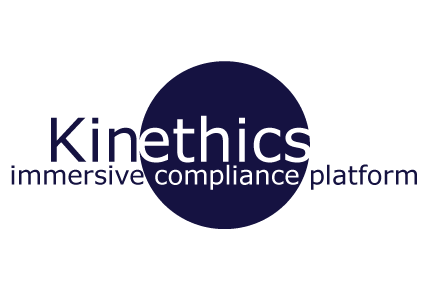
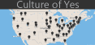

I was lucky to discover my passion for journalism at the tender age of 12 and began pursuing journalism as a career in high school.
I started out a writer for the school paper, became editor, and then moved on to direct the school broadcast.
Yet, by the time I entered college I knew neither one of those journalism tracks were for me.
As I began taking prerequisite journalism courses at the School of Journalism and Mass Communication at UNC-Chapel Hill,
I stumbled upon an introductory course to multimedia, and I was hooked. As I began to learn the ins and outs of Wordpress,
basic HTML and CSS I realized that this was a career path that I had a desire to pursue.
During the spring of my junior year I joined Reese News Lab. Where I have expanded my knowledge of not
just code but the direction that journalism is taking. I am challenged everyday to think beyond just building interactive multimedia pieces but who and
what they could serve.
Reese News Lab has not just given me real world experience in journalism and a glimps of where it is going. Reese News Lab has taught me that as the field of journalism continues
to evolve towards more digital media, there is a need for skilled coders to help news organizations adapt to the changes.

Kinethics is an immersive, culturally specific compliance training platform that uses real-life cases of corruption
to empower and train employees of multinational corporations. The idea was born in the Reese News Lab to answer the question
"How might we end global corruption?" To answer the question my team and I realized that insufficient complience training is where corruption
begins. We tested our theory and found that business agreed. We are currently testing our first prototype. My main role on the team was
to make sure development of the prototype went smoothly but as part of a team I did everything from calling potential clients to designing our business cards.
I was the primary web developer for the 2014 CPJW site. The site is built off a WordPress theme. I utilized a child theme to
support all the videos. I implemented an Instagram and Twitter plugin. The site is a finalist for the 2015 SXSW Student Innovation award.

Throughout the summer of 2014 I ran and updated the site daily throughout the North Carolina General Assembly short session. I sold subscriptions
for the service, provided customer service, and brainstormed new ways to keep the site relevent while reaching a wider audience. Throughout the
summer I spent numerous days in an effort to make the NCGA more transparent

Culture of Yes was a team built Django based web-app that won first place at Pearl Hacks, an all-female hackathon hosted at UNC. Our group was the only
group to represent the UNC Journalsim School and we decided to do what we know: tell a story. Culture of Yes focuses on sexual assult. I helped collect
data and scrape each of the schools' newspaper sites represented in the app.
I built the ONA Applause app as a part of the 2014 ONA Newsroom with the help of my mentors Jeremy Bowers and Sisi Wei. The app allowed ONA
attendees to give virtual applause for the sessions they participated attended. The app was a wonderful learning experience, I learned what a UUID
was and how to implement it as well as building a cookie to track the session attendees. I was able to use the information to make graphs of
ONA's best sessions.
I joined the Reese News Lab spring semester of my junior year.
The first week
was a whirlwind of ideas being thrown at the wall (literally). The rest of the semester was an eye-opening experience.
I was placed in a group charged with the question: How might we shed light on the judicial system? We came up with
bench, a searchable database of local judges that presents comprehensive
transparency to the judicial system. That one semester taught me to question everything. The worst thing we could do was assume t
o know what the public wanted or needed. We talked to everyone, from the president of the NC Bar Association to the everyday person
on the street. We found a desirable audience and marketed bench so that the project would start generating revenue within five years.
I stayed on staff at Reese between the summer of my junior and senior year to launch Capitol Hound
a searchable archive of the North Carolina General Assembly. While my first semester taught me how to research and market a product Capitol
Hound taught me how to launch a product. Over the course of the summer I learned that there was a difference between someone saying they
are willing to spend money on a service and actually paying for the service. I did everything from making sales calls to customer service
to hunting
down NCGA sessions. The summer was an adventure of discoveries.
Being a part of the Reese staff has shaped me as an individual and journalist. I have learned to never accept the status quo and
that there are no limits to what we can do. I have learned to pivot from ideas so that I do not lose my audience. I have learned that
while I specialize in front-end web development but building something is the easy part, finding an audience and a revenue stream is hard.
Education
Univeristy of North Carolina at Chapel Hill - 2015
Bachelors in Journalism and Mass Communication - Interactive Track
Bachelors Communication Studies
Experience
Fayetteville Observer (Summer 2015)
Fayetteville Observer (May 2015 - Present)
First and only interactive intern. I build interactives that
can be easily edited, replicated and integrated in
Bloxs CMS.
Kinethics (Jan. 2014-Present)
Received funding to develop an interactive compliance
training platform. The idea came out of the Reese News
Lab and was funded by a private donor. The project is
currently in its testing stage..
Reese News Lab (Spring 2013 - Spring 2015)
Develop startups through research and discussion with experts.
Build viable prototypes, conduct user testing for projects, create business
and marketing plans and pitch to industry professionals.
Capitol Hound (Summer 2014)
Ran and updated the site daily, sold subscriptions,
provided customer service support, tracked down public records.
Carolina Photojournalism Workshop (Summer 2014)
Created a website of aggregated videos for the 2014 summer photojournalism workshop that showcased stories and video.
Courses and Skills
Programming
Introduction to Programming Learned the basics of C++
Interactive Design
HTML5, CSS, JavaScript, Django, Wordpress
Design
Adobe Suite - Illustrator, Photoshop, InDesign, Dreamweaver
Audio/Video Information Gathering
Premiere CS6, Final Cut Pro
News Writing and Editing Skills
Extracurricular
Online News Association (ONA)
UNC Chapter - President (Fall 2014 - Present)
ONA Student Newsroom (Fall 2014)
Built a mobile application.
Computer Science Club (Spring 2013 - Present)
Member and Tutor